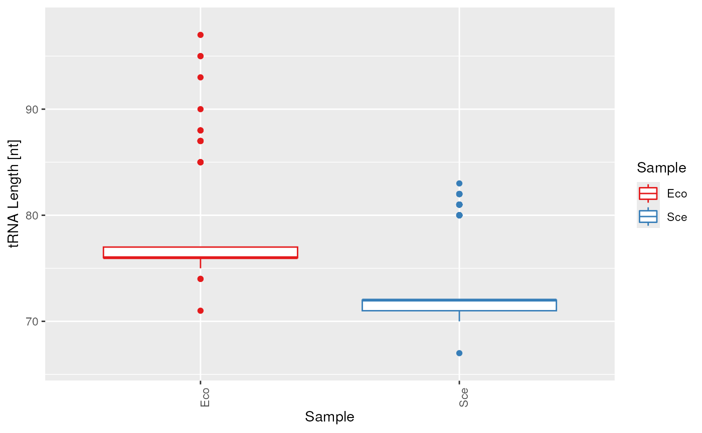

gettRNAFeaturePlots generates a plot for every feature found with
gettRNASummary. Based on the datatype, it will generate suitable point
or bar plots. Names of the GRangesList will be used as sample identifiers
and used for colouring.
The options tRNA_colour_palette, tRNA_colour_yes and
tRNA_colour_no will be used for colours.
gettRNAFeaturePlots(x, plotScores = FALSE, scores = NA, scoreLabel = "Score")
# S4 method for GRangesList
gettRNAFeaturePlots(x, plotScores = FALSE, scores = NA, scoreLabel = "Score")a named GRangesList object.
logical value, whether to plot scores. If scores are not provided with an additional argument, it will try to use the column "score" of the GRanges objects.
a list of scores, which have to have the same dimensions as the GRangesList or GRanges object.
a string to use as a label for the x axis.
a list of ggplot2 plots. These can be customized further.
data("gr", package = "tRNA")
data("gr_eco", package = "tRNA")
grl <- GRangesList(Sce = gr,
Eco = gr_eco)
plots <- gettRNAFeaturePlots(grl)
# customized plots
plots$length$layers <- plots$length$layers[c(-1,-2)]
plots$length + ggplot2::geom_boxplot()
